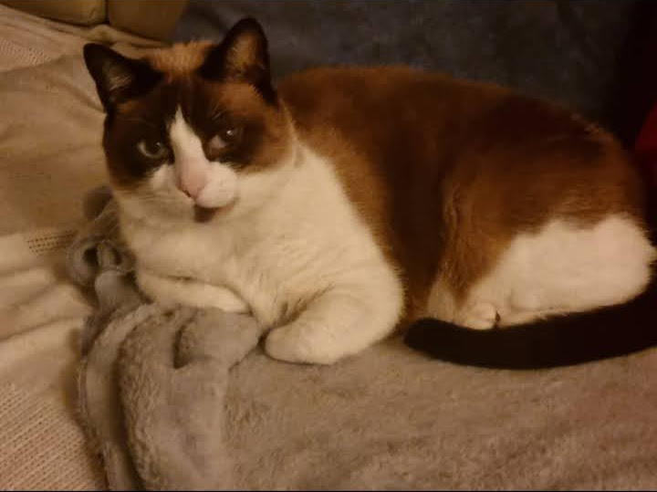

Sobre mim
Meu nome é Daniel Gouvêa Vanzato, tenho 22 anos e vivo em Ubatuba-SP. Sempre gostei muito de jogos de RPG, principalmente os de mesa, como DnD. O que mais me cativa nesse hobby é como tudo funciona em um pequeno ecossistema matemático, por exemplo: o valor de um atributo X que impulsiona a habilidade Y e causa mais N% de dano. Então, quando eu comecei a estudar computação, encontrei aquela mesma lógica que sempre me encantou. Nerdice de lado eu também gosto muito de desenhar e lutar judô. Por fim gostaria que você conhecesse meu gatinho Batata, foto dele ao lado!

Formação
Minha formação acadêmica é em Análise e Desenvolvimento de Sistemas,
área na qual venho aprofundando meus conhecimentos sobre desenvolvimento
de software e tecnologia.
Também cursei o bootcamp de Desenvolvimento Web da LeWagon, um bootcamp de 2 meses onde
aprendi os fundamentos da programação com ferramentas como ruby-on-rails, JavaScript e postgreSQL.
Além de conceitos de desenvolvimento web, bancos de dados e lógica de programação.
Minha experiência anterior com suporte técnico e infraestrutura de TI também contribui
para minha compreensão prática da área.